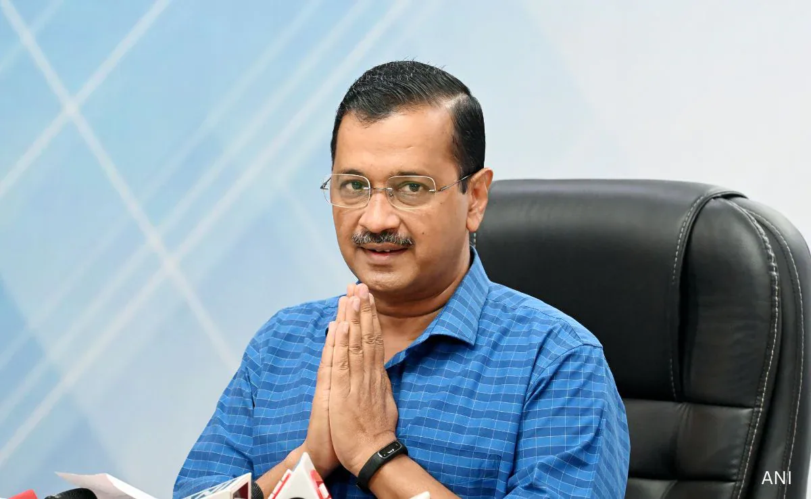
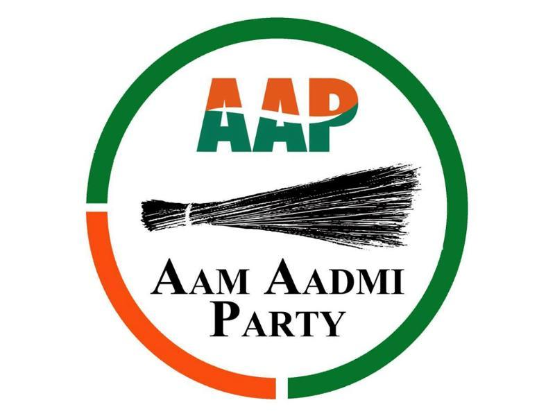
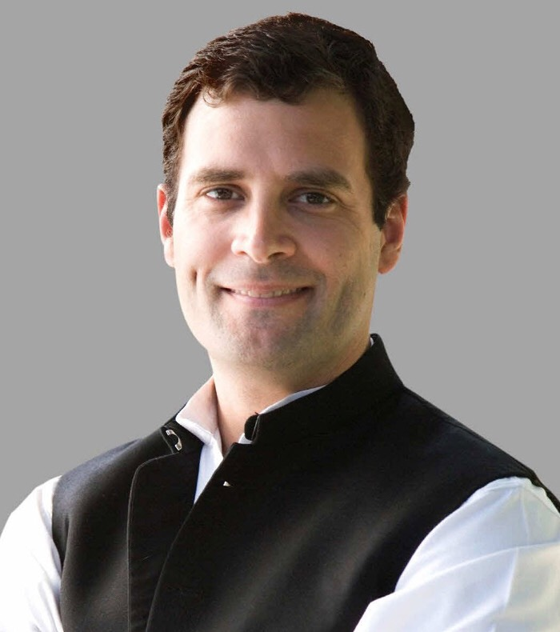
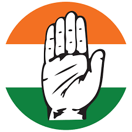
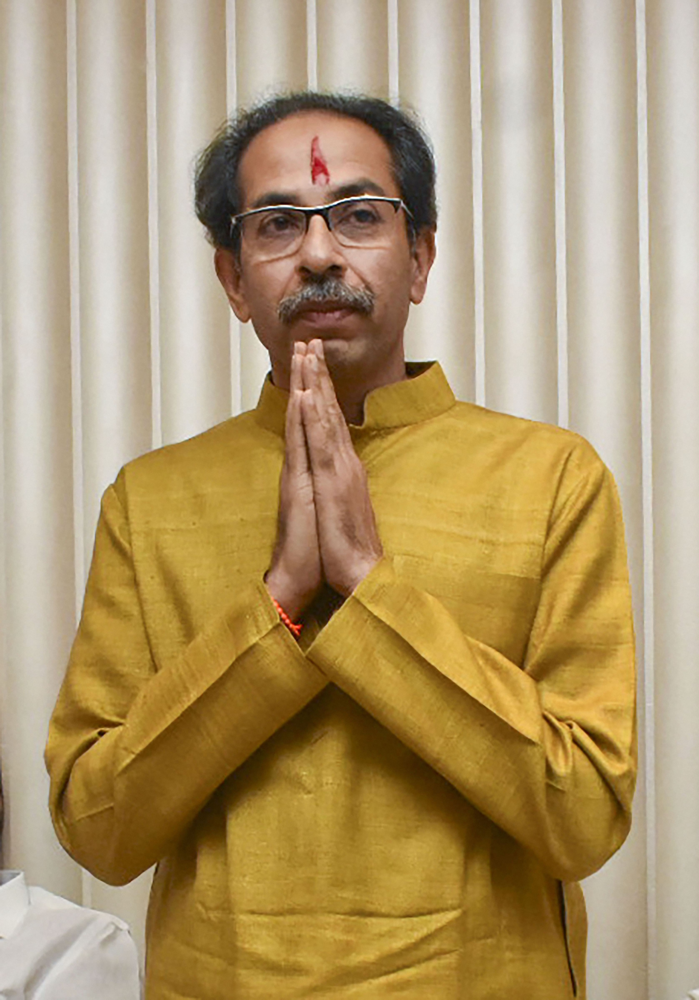
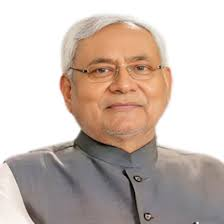
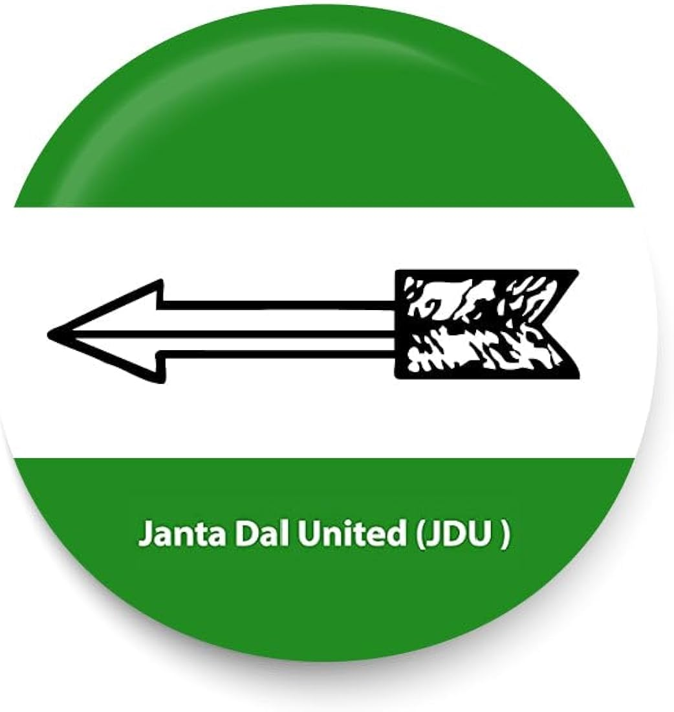

PM Candidates

Narendra Modi
Party: Bharatiya Janata Party


Arvind Kejriwal
Party: Aam Aadmi Party


Rahul Gandhi
Party: Indian National Congress


Uddhav Thackeray
Party: Shiv Sena (UBT)


Nitish Kumar
Party: Janata Dal (United)